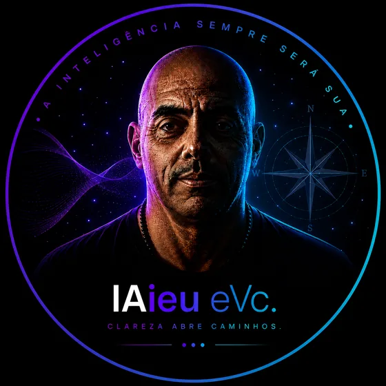

Quarenta anos
organizando operações.
Hoje com ferramentas que não existiam ontem.
Comecei antes dos vinte anos.
Passei por logística, aviação, carga, supply chain, varejo, hotelaria e operações. No Brasil e nos Estados Unidos. Construí operações onde elas não existiam, implantei processos, reorganizei empresas que haviam perdido eficiência, formei equipes e recuperei negócios que pareciam não ter solução.
Comecei do zero mais de uma vez.
Os mercados eram diferentes.
As empresas eram diferentes.
As tecnologias eram diferentes.
O trabalho era sempre o mesmo.
Entender como a operação funcionava de verdade, e não como estava escrito que deveria funcionar. Descobrir onde o tempo e o dinheiro estavam sendo perdidos. Organizar o que estava desorganizado. Colocar para rodar e conferir se melhorou.
Quarenta anos me ensinaram uma coisa: o que trava uma operação quase nunca é o que as pessoas dizem que trava.
A resposta está no processo, não no discurso sobre o processo. Por isso eu não começo perguntando o que você acha que está errado. Começo olhando como o trabalho acontece de verdade.
Uma parte grande desse tempo foi em operação pesada, do tipo que não perdoa improviso. Carga aérea, aeroporto, prazo, equipe, custo, cliente esperando. Nesse mundo, processo mal desenhado não gera um relatório ruim. Gera avião parado.
Foi ali que eu aprendi a enxergar operação.
E é isso que eu levo hoje para dentro de cada projeto do IAieu.
Hoje eu faço exatamente a mesma coisa que fazia há quarenta anos. A diferença é que agora existem ferramentas que fazem em minutos o que antes levava semanas. A inteligência artificial é uma delas.
Ela acelera análise, organiza informação e ajuda a construir a solução. Ela não conhece a sua operação, não conversa com a sua equipe e não assume responsabilidade por nenhuma decisão.
As ferramentas mudaram. A experiência que decide o que fazer com elas, não.
É por isso que o IAieu não vende tecnologia. Vende quarenta anos de operação, com as melhores ferramentas disponíveis hoje aplicadas em cima disso.

“Ferramenta boa não sabe qual problema precisa ser resolvido. Quarenta anos de operação sabem.É por isso que a direção continua sendo humana.
Quarenta anos a favor da sua operação.
Aponte um processo que hoje consome pessoas, tempo ou dinheiro.
Falar no WhatsApp